The Project is to develop a fully
functional GUI designer for Java. Which will be 100% cross
platform compliant, fast and easy to use with "hidden" power features,
such as keyboard shortcuts for all operations. The program will base its
structure on open standards and therefore have a strong foundation which easily
can be extended.
Java
GUI Designer will be easy
to install and use. It will implement several quick start features which, makes
it easy to start on new project without getting too many questions. It's very
important to note that Java GUI Designer
will not implement anything else than GUI features and that way avoid becoming
a monster application using unnecessary time and resources.
By implementing all these features Java GUI Designer will be a unique
application and appeal to all levels of Java coders.
Inspiration behind JAVA
GUI DESIGNER is the project called "The GART" in
Source forge (https://sourceforge.net/projects/gart/), which was a graduate
project at the Computer Science faculty,
JAVA GUI DESIGNER is a fully functional GUI designer for Java.
Which is 100% cross platform compliant, fast and easy to use with hidden power
features, such as keyboard shortcuts for all operations. JAVA GUI DESIGNER implements feature
called WYSIWYG (what you se is what you get), that is user will be virtually
editing the output of the java code required at the design time.
JAVA GUI DESIGNER
reduces the resources & time required for the project because it handles
all the GUI design part. People do not need any programming knowledge to use
our JAVA GUI DESIGNER, yet they will be able to develop very
appealing user Interfaces for their java applications. It is very important to
note that JAVA GUI DESIGNER will not implement anything else than GUI features.
PROJECT DIALOG
First thing that
appears on the screen is Project Dialog..
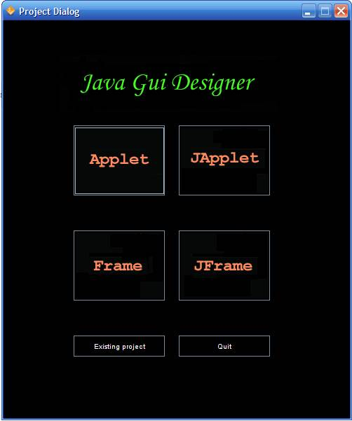
It allow to choose
the type of parent container you want to use like applet, japplet, frame and
jframe. It also allows user to open the existing project file.
MAIN WINDOW
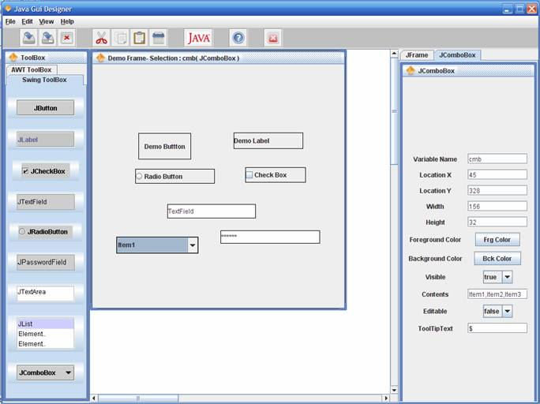After you select the type of parent container
or open the existing project file the main window appears.
This is the JGUID
main window…
Here we have
menubar, tool bar, toolbox, user screen, and properties window.
MENUBAR
FILE MENU
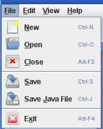
File menu allow
starting new project, opening existing and closing the current project. It also
allows to save the current project and java code for the current project.
EDITMENU
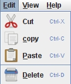
Edit menu allows
performing cut, copy, paste and deleting operations on component present in the
user screen.
VIEW MENU
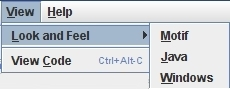
View Menu allows
changing the look and feel of the project and allows viewing the java code for
the current user screen layout.
TOOLBAR
Tool bar provides
shortcuts to frequently used operation in the project.
TOOLBOX
JGUID provides
users with two toolboxes.
AWT Toolbox and
SWING Toolbox.
Toolbox allows
users to select required components to be added to the user panel by clicking
on it. The currently select component is shown as Toolbox title. (eg. ToolBox:
JButton for if JButton is selected ).
AWT
Toolbox SWING Toolbox
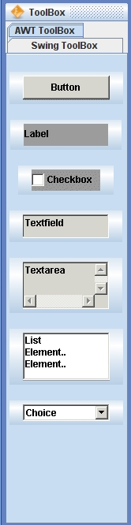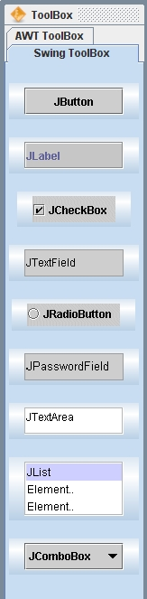
USER SCREEN
User Screen is the
place where the user works on the project.
It allow user to add, delete and manipulated the components on the user
panel.
·
The
Currently selected component can be seen in the title of the User Panel.
·
Component
can be moved by dragging with mouse on the user panel.
·
Components
can be resized by dragging at the right-bottom corner of the component.
·
User
can also resize the user panel if it is set Resizable.
·
Remember
while resizing a JComboBox component start dragging to left of the dropdown
button as shown in figure.
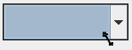
·
If you
are using java version 1.4 or less then you will be unable to perform any drag
or move operation on combo box. Instead u can use the properties window and
change the properties manually.
·
UserPanel
Reflects the exact output required by the user.
·
Swing
Components are bordered black and AWT Components are bordered yellow.
PROPERTIES WINDOW
The properties window has two tabs. One contains the properties panel
of the parent container, and the other is the properties panel for the
currently selected component on the user panel.
Properties Panel of a Sample Properties Panel of
Parent
Radio Button Container
(JFrame)
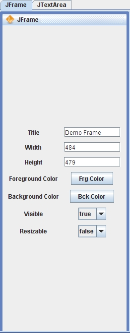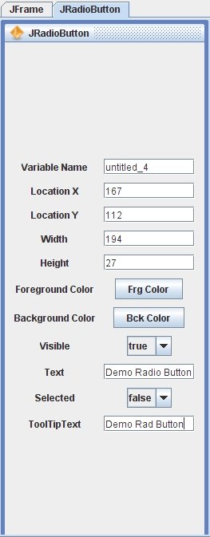
· SetVisible Property of all component is not reflected on to the screen.
· Please don’t forget to press enter after editing the properties. If you
don’t press enter after editing the
properties the properties may not be
updated and may even not reflect on
the screen
· For Component JComboBox, Choice, List and JList there is a
property called Contents. Here we
need to specify multiple strings u
can do it by separating them by comma’s. (eg: as Shown in fig).
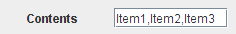
CODEVIEW SCREEN
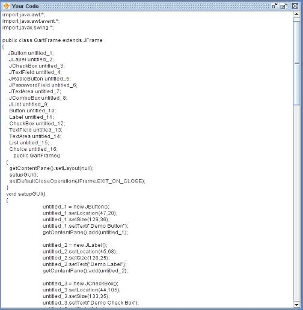Shows the generated java code for the
current user screen layout. This can be saved by using the save as option in
File Menu.